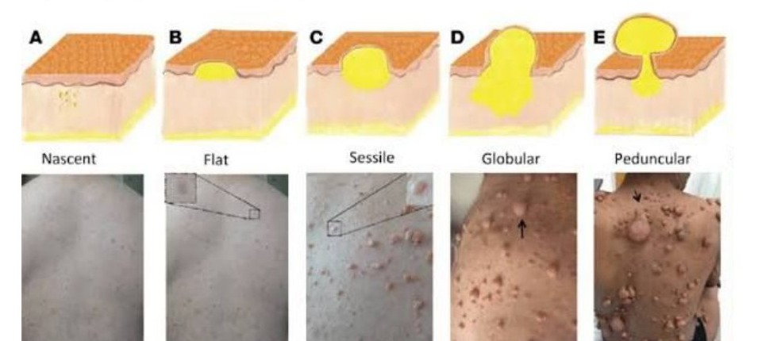
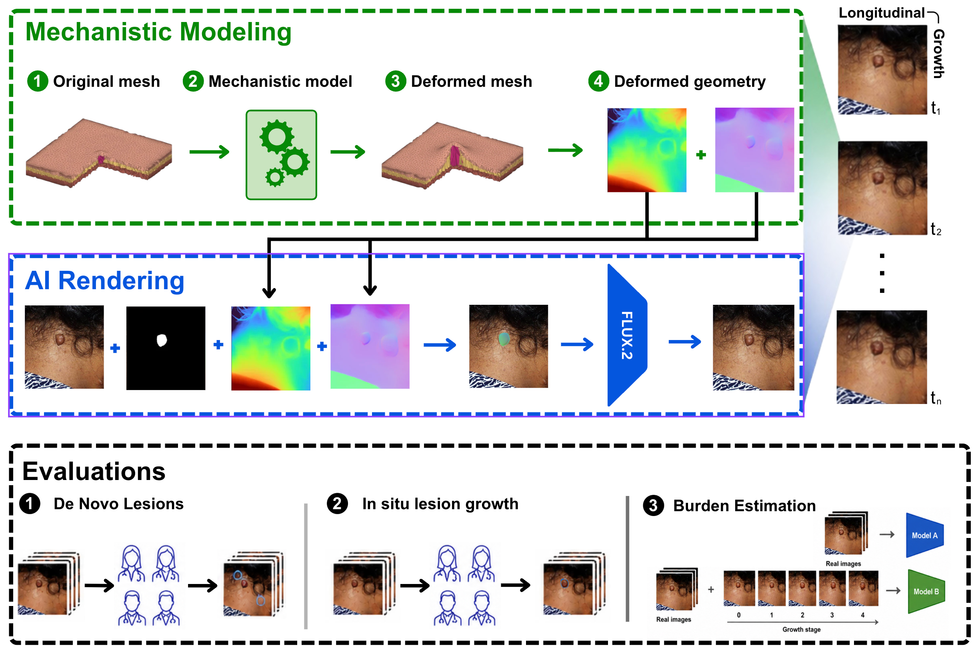
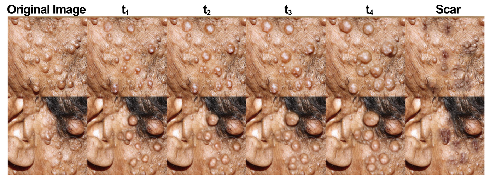
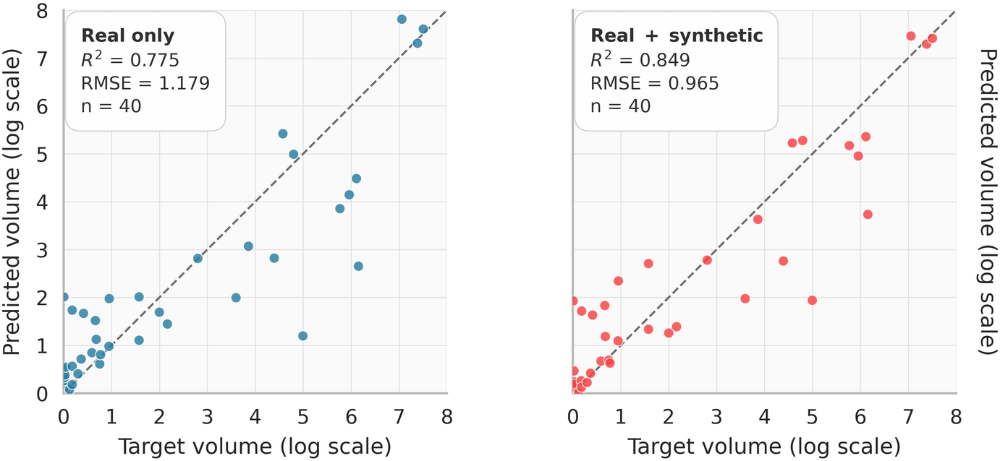
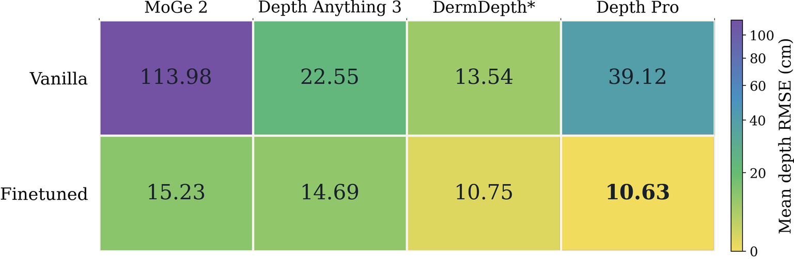

Volume is all you need
Neurofibromatosis type 1 (NF1) is a tumor-predisposition syndrome, and the cutaneous neurofibromas (cNFs) that appear on the skin are its most visible sign. Following these lesions over time is clinically meaningful, yet the usual tools - visual inspection, manual counts, calipers, and flat photographs - describe how a lesion looks rather than how much tissue is actually there.
We connect that measurement problem to the missing time dimension. A morphoelastic finite-element model proposes how a lesion grows in three dimensions, and a geometry-conditioned FLUX.2 Klein adapter renders the simulated geometry as a realistic longitudinal image. Synthetic augmentation then improves burden estimation on held-out real images, increasing R² from 0.775 to 0.849.
cNFs are peripheral nerve-sheath tumors that grow within the skin itself, and a single person carrying NF1 can host hundreds or even thousands of them. The complication, for anyone hoping to measure them cleanly, is that they stubbornly refuse to be the same shape. They run along a whole morphological gradient: from nascent lesions barely lifted off normal skin, to flat ones that spread sideways without rising, to sessile ones planted broadly on the surface, to globular ones bulging outward, all the way to pedunculated ones dangling from a narrow stalk like fruit on a branch.

This variety is precisely what makes recent efforts in AI-driven cNF assessment so valuable and yet, on their own, incomplete. Detection and segmentation can answer where the lesions are and how many there are, but they stop short of the final step: total burden.
Clinically visible burden is a tangled product of count, footprint, protrusion, and morphology, and no one of those four ever stands in for the others. Two lesions can share an identical segmentation footprint while carrying very different amounts of tissue, one lying flat and the other bulging outward. Volume becomes the natural quantity to report because it folds together what the clinician can already see with what the 2D segmentations were hiding all along.
Volume is the measurement dermatology AI has been missing for cNF. It offers a lower-cost, faster way to quantify burden and a more precise way to follow disease over time. The need is also acute in research: cNF treatment trials still lack standardized outcome measures for objective changes in lesion size and appearance.
Method
A flat photograph gives us appearance, but progression requires geometry and time. The method therefore separates the problem in two. Physics supplies the shape a lesion should take as it grows; generative AI supplies the color, texture, and boundary detail that make the simulated state look like skin. The journey from one ordinary image to a longitudinal sequence runs through four steps.

Depth Pro and surface normals describe how each lesion protrudes from the surrounding skin.
A morphoelastic finite-element model expands one lesion through layered skin tissue.
A cNF-specific FLUX.2 Klein adapter renders each simulated geometry as a photorealistic frame.
Reader studies assess realism, while matched ConvNeXt models test whether synthetic growth improves burden regression.
Synthetic Data
The pipeline sounds clean on paper: recover geometry, simulate growth, render the result. What makes the problem difficult is the missing ground truth. Public cNF datasets are almost entirely cross-sectional, and directly observing meaningful progression can require years or decades. A model cannot learn a time course from images that never contain one.
The way out is to manufacture the supervision ourselves. Depth and surface normals encode the protruding lesion. A layered finite-element skin model grows that lesion through a sequence of controlled states. FLUX.2 then converts each state back into a clinical-looking photograph while preserving the surrounding skin. What the generator hands us is exactly what ordinary photographs almost never can: paired images and geometry at multiple known growth states.
This is not synthetic data for its own sake. It is a controlled sandbox for building burden estimators, treatment-response tools, and medical-digital-twin infrastructure before scarce longitudinal patient data are available. Real patient imaging remains the standard for final calibration and validation.

Data
279
cNF images
42,305
lesion annotations
279
generated sequences
The image split was 229 / 25 / 25 for training, validation, and testing. Scar modeling used 11 images with 359 annotations.
Results
The central question is whether the simulated growth states actually help on images the model has never seen. To isolate that effect, both training arms used the same architecture and the same 60 real images. The augmented arm received one additional ingredient: 240 physics-guided synthetic growth states.

0.775 → 0.849
R²
18.1%
lower log RMSE
The real-only arm used 60 training images. The augmented arm used the same 60 images plus 240 simulated growth states. On 40 held-out real images, RMSE fell from 1.179 to 0.965.

Limits